조경산업기사 (2018-09-15 기출문제)
1과목: 조경계획 및 설계
1. 영국 풍경식정원에서 대정원과 모든 시골풍경을 성공적으로 통합시킬 수 있는 방법을 제시한 ‘스펙테이터(The spectater)'의 저자는?
- 조셉 애디슨
- 토마스 웨이틀리
- 로버트 카스텔
- 존 제라드
(정답률: 78%)

2. 다음 중 한국 전통정원 양식 가운데 특히 별서의 특징이라고 할 수 있는 것은?
- 선택된 자연풍경을 이상화하여 독특한 축경법(縮景法)에 따른 상징화된 모습으로 정원을 표현하였다.
- 자연적인 경관을 주 구성 요소로 삼고 있기는 하나 경관의 조화에 주안을 두기보다는 대비에 중점을 두었다.
- 자연의 아름다움이 건물의 내부에도 연결되어 하나의 특징적 정원을 이룬다.
- 자연에 대한 선종적(禪宗的)인 해석을 바탕으로 한 상징과 많은 법칙들에 의하였다.
(정답률: 75%)
3. 고대 그리스 특수정원인 아도니스원의 성격이라고 볼 수 있는 것은?
- Megaron
- Hanging garden
- Roof garden
- sunken garden
(정답률: 68%)
4. 다음 중 아미산(峨嵋山) 조경 유적은 어느 곳에 있는가?
- 경주 안압지(雁鴨池)
- 경복궁 교태전(交泰殿) 후원
- 창덕궁 대조전(大造殿) 후원
- 경복궁 건청궁(乾靑宮) 후원
(정답률: 80%)
5. 조선시대 경승지에 세워진 누각들이다. 경기도 수원에 위치하고 있는 것은?
- 한벽루(寒碧樓)
- 사미정(四美停)
- 방화수류정(訪花隨柳亭)
- 북수구문루(北水口門樓)
(정답률: 81%)
6. 다음 중 계성의 원야(園冶)에 기술된 차경기법이 아닌 것은?
- 대차
- 원차
- 앙차
- 부차
(정답률: 61%)
7. 다음과 같은 특징을 갖는 정원 유적은?
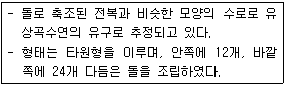
- 계담(溪潭)
- 구품연지(九品蓮池)
- 만월대(滿月儓)
- 포석정(鮑石亭)
(정답률: 87%)
8. 파티오(Patio)는 어느 나라 정원의 형태에서 많이 볼 수 있는가?
- 로마
- 프랑스
- 스페인
- 이탈리아
(정답률: 82%)
9. 조경계획을 위한 기본도(base map)중 대지 종ㆍ횡 단면도의 기초가 되는 도면은?
- 토양도
- 식생도
- 지형도
- 지질도
(정답률: 82%)
10. 환경적으로 건전하고 지속 가능한 개발(ESSE)에 대해서는 많은 해석이 있는데 다음 중 골자를 이루고 있는 개념이 아닌 것은?
- 자연자원의 절대 보존
- 세대 간의 형평성
- 환경 용량 한계 내에서의 개발
- 사회 정의적 관점에서의 개발
(정답률: 67%)
11. 개발 대상지에서는 벌채 등으로 대규모의 붕괴가 일어나기 쉬우므로 자연 상태로 적극 보존 할 필요가 있는 경사도는 최소 몇 도(°) 이상인가?
- 15° 이상
- 20° 이상
- 25° 이상
- 30° 이상
(정답률: 58%)
12. 자연환경보전법상의 생태ㆍ경관보전지역 관리 기본계획에 포함되어야 할 사항이 아닌 것은?
- 지역 안의 녹지관리쳬계와 공원계획에 관한 사항
- 지역 안의 생태계 및 자연경관의 변화 관찰에 관한 사항
- 지역 안의 오수 및 폐수의 처리방안
- 환경친화적 영농 및 생태관광의 촉진 등 주민의 소득증대 및 복지증진을 위한 지원방안에 관한 사항
(정답률: 37%)
13. 국토종합계획은 몇 년마다 수립하여야 하고, 몇 년 마다 전반적으로 재검토 및 정비를 하여야 하는가?
- 20년, 10년
- 20년, 5년
- 10년, 5년
- 10년, 3년
(정답률: 65%)
14. 당시의 사회적 가치는 경관과 도시형태에 중요한 역할을 한다. 다음 중 서로 관계가 먼 것은?
- 죽음의 문제-피라미드
- 정교-고딕 건축
- 절대왕권-수직적인 거대도시
- 환경 문제-지속가능한 도시
(정답률: 47%)
15. 각종 선(線)의 형태에 대한 표현 설명으로 가장 거리가 먼 것은?
- 직선은 대담, 적극적, 긴장감 등을 준다.
- 곡선은 유연, 온건, 우아한 감을 준다.
- 대각선은 수동적, 휴시상태의 감을 준다.
- 지그재그(Zigzag)는 활동적, 대립, 방향제시를 한다.
(정답률: 72%)
16. 채도에 관한 설명 중 옳은 것은?
- 흰색을 섞으면 높아지고 검정색을 섞으면 낮아진다.
- 색의 선명도를 나타낸 것으로 무채색을 섞으면 낮아진다.
- 색의 밝은 정도를 말하는 것이며 유채색끼리 섞으면 높아진다.
- 그림물감을 칠했을 때 나타나는 효과이며 흰색을 섞으면 높아진다.
(정답률: 65%)
17. 다음과 같이 3각법에 의한 투상도에서 누락된 정면도로 옳은 것은?
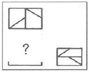
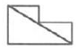
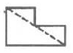
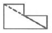
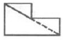
(정답률: 56%)
18. 자전거 도로 설계와 관련된 용어의 설명이 틀린 것은?
- 설계속도 : 자전거도로 설계의 기초가 되는 자전거의 속도
- 정지시거 : 자전거 운전자가 같은 자전거도로 위에 있는 장애물을 인지하고 안전하게 정지하기 위하여 필요한 거리
- 제한길이 : 종단경사가 있는 자전거도로의 경우 종단경사도에 따라 연속적으로 이어지는 도로의 최소 길이
- 편경사 : 평면곡선부에서 자전거가 원심력에 저항할 수 있도록 하기 위하여 설치하는 횡단경사
(정답률: 64%)
19. 주거단지 조경의 기본설계 내용으로 옳지 않은 것은?
- 지속가능한 녹색 생태도시의 원리를 적용한다.
- 주택의 질과 양호한 거주성 확보를 위하여 영역성, 향, 사생활 보호, 독자성, 편의성, 접근성, 안전성 등을 고려하여 설계한다.
- 단지가 갖고 있는 역사적 문화적 유산과 보호수, 수림대, 습지 등의 자연환경자원 등 고유의 여러 특성을 최대한 활용한다.
- 주동의 향은 지형과 부지형태, 조망 등에 따라 조화를 이루도록 하고, 서향을 우선하되, 특별한 경우를 빼고는 남향을 피한다.
(정답률: 82%)
20. 조경설계기준상의 흙쌓기 식재지와 관련된 설계 내용 중 틀린 것은?
- 저습지의 토양 중 유기물질을 함유한 부분과 토양공극 내에 존재하는 수분은 흙쌓기에 앞서서 충분히 제거하도록 설계한다.
- 기존의 지반이 기울어진 경우에는 기존 지반과 흙쌓기층의 분리해 기존 지반을 평식으로 정리한 다음 흙쌓기 하도록 설계한다.
- 식재지의 흙쌓기 깊이가 5m를 넘는 경우, 지반의 부등침하 및 미끄러짐이 우려되는 곳에서는 흙쌓기 높이 2m마다 2% 정도의 기울기로 부직포를 깔아 토양공극의 자유수가 쉽게 배수되도록 한다.
- 기존의 땅 위에 기존 토양보다 투수계가 큰 토양을 쌓을 경우에는 정체수의 배수가 용이 하도록 기존 지반의 표면을 2% 이상 기울게 마무리하며, 정체수가 모이는 지점에 심토층 배수시설을 설치한다.
(정답률: 45%)
2과목: 조경식재
21. 다음의 차폐대상과 차폐식재와의 관계를 나타내는 식과 관련이 없는 것은?
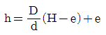
- h : 차폐식재의 높이
- H : 차폐대상물의 높이
- d : 시점과 차폐식재와의 수평거리
- D : 눈과 차폐대상물의 최하부를 연결한 거리
(정답률: 70%)
22. 생태적 천이에 관한 설명으로 옳은 것은?
- 호수에서의 생태적 천이는 점진적으로 느리게 진행된다.
- 2차 천이 계열은 삼각주, 사구(sand dune)등에서 볼 수 있다.
- 1차 천이 계열은 토양이 이미 존재하므로 르게 진행된다.
- 영양염류 공급과 생산력이 거의 없는 호수를 부영양호라 한다.
(정답률: 50%)
23. 다음 중 가지에 예리한 가시와 같은 형태를 갖고 있는 수목은?
- 명자나무(Chaenomeles speciosa)
- 남천(Nandina domestica)
- 호랑가시나무(llex cornuta)
- 서어나무(Carpinus laxiflora)
(정답률: 66%)
24. 지상의 줄기가 일 년 넘게 생존을 지속하며 목질화되어 비대성장을 하는 만경목(曼經木)으로만 구성되지 않은 것은?
- 작약, 멀꿀
- 송악, 으름덩굴
- 인동덩굴, 능소화
- 마삭줄, 담쟁이덩굴
(정답률: 69%)
25. 다음 설명에 적합한 표본추출 방법은?
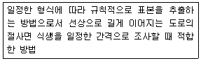
- 계통추출법
- 무작위추출법
- 전형표본추출법
- 벨트 트랜섹트법
(정답률: 54%)
26. 조경식재에 의한 기후조절기능을 설명한 것 중 맞는 것은?
- 식물은 아스팔트나 그 밖의 인공재료에 비하여 태양복사를 반사시키는 효과가 크지만, 흡수한 열은 인공구조물보다 비교적 오랫동안 식물 내부에 가지고 있어 외부 기온을 떨어뜨리는 효과가 있다.
- 기온과 습도가 적당하더라도 바람이 지나기면 쾌적성이 떨어지는데 이 같은 바람을 차단하기 위해서는 고밀도로 식재하는 것이 바람감소에 더욱 효과적이다.
- 바람막이 역할을 나무의 식재 폭(두께)은 방풍효과와는 무관하지만, 식재의 폭이 너무 좁으면 최소한의 필요한 방풍밀도를 확보하기 어려우므로 일정한 폭이 되도록 식재하여야 한다.
- 식물은 주로 광합성작용에 의하여 체내 수분을 공기 중으로 방출하여 공중습도를 조절하는 기능을 가지고 있다.
(정답률: 48%)
27. 수생식물 분류와 해당 식물의 연결이 맞는 것은?
- 정수서 : 부들
- 부엽성 : 붕어마름
- 부유성 : 고랭이
- 침수성 : 가시연
(정답률: 64%)
28. 식물 분류학상 과(科)가 틀린 것은?
- 곰솔 : 소나무과
- 사철나무 : 노박덩굴과
- 미루나무 : 버드나무과
- 복자기 : 콩과
(정답률: 60%)
29. 꽃이 잎보다 먼저 나오는 식물이 아닌 것은?
- 살구나무(Prunus armeniaca var. ansu Maxim)
- 올벚나무(Prunus pendula for. ascendens Ohwi)
- 다정큼나무(Raphiolepis indica var. umbellata Ohashi)
- 복사나무(Prunus persica Batsch for. persica)
(정답률: 68%)
30. 다음 중 측백나무과(Cupressaceae)에 해당하지 않는 수종은?
- 향나무(Juniperus chinensis)
- 편백(Chamaecypar is obtusa)
- 측백나무(Thuja orientalis)
- 독일가문비(Picea abies)
(정답률: 74%)
31. 월동작업 중 즐가싸주기(나무감기)를 실시하여 주는 이유가 아닌 것은?
- 충해 잠복소 제공
- 수분증산 감소
- 잡목 침해 방지
- 수피일소현상 억제
(정답률: 63%)
32. 가로변 녹음수의 일반조건에 맞는 것은?
- 지하고가 높은 수종
- 병충해에 약한 수종
- 수간에 가시가 있는 수종
- 잔가지가 많이 발생하고 고사지가 많은 수종
(정답률: 81%)
33. 다음 중 가장 먼저 꽃이 피는 것은?
- 철쭉(Rhododendron schlippenbachii)
- 산철쭉(Rhododendron yedoense)
- 진달래(Rhododendron mucronulatum)
- 풍년화(Hamamelis japonica)
(정답률: 59%)
34. 녹나무과(科) 식물 중 낙엽성인 것은?
- 녹나무(Cinnamomum camphora)
- 생강나무(Lindera obtusiloba)
- 센달나무(Machilus japonica)
- 후박나무(Machilus thunbergii)
(정답률: 59%)
35. 다음 중 잔디종자의 발아력(發芽力)이 감퇴되는 요인에 해당되지 않는 것은?
- 종자 내 효소활력이 감소되는 경우
- 종자 내 저장양분이 소모된 경우
- 발아유도기구가 분해된 경우
- 가수분해효소가 활성화 된 경우
(정답률: 71%)
36. 꽃이나 잎의 형태와 같이 보다 작은 식물학적 차이점을 지닌 것으로 식물의 명명에서 “for."로 표기하는 것은?
- 품종
- 이명
- 변종
- 재배품종
(정답률: 73%)
37. 조경숙목의 번식을 위해 다음과 같은 공정 순서를 갖는 번식법은?
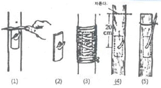
- 눈접(아접)
- 깍기접(절접)
- 쪼개접(할접)
- 꺽꽃이접(삽목접)
(정답률: 64%)
38. 다음 [보기]의 특징을 갖는 수종은?
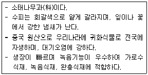
- 가죽나무
- 메타세쿼이아
- 은단풍
- 회화나무
(정답률: 57%)
39. 녹음수의 잎 1매에 의한 햇빛 투과량이 10%일 때 2매에 의한 반사흡수량은?
- 90%
- 93%
- 96%
- 99%
(정답률: 65%)
40. 다음 [보기]에서 설명하고 있는 식물은?
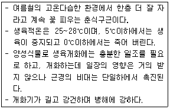
- 달리아
- 튤립
- 칸나
- 히아신스
(정답률: 60%)
3과목: 조경시공
41. 자연석을 다음의 조건으로 30m2쌓을 때 자연석 쌓기 중량은 약 얼마인가? (단, 평균 뒷길이 0.7m, 단뒤중량 2.65ton/m3, 공극율 30%, 실적율 70%이다.)
- 2.38 ton
- 5.65 ton
- 16.70 ton
- 38.96 ton
(정답률: 43%)
42. 콘크리트용 골재로서 요구되는 성질에 대한 설명 중 틀린 것은?
- 골재의 입형은 가능한 한 편평, 세장하지 않을 것
- 골재의 강도는 경화시멘트페이스트의 강도를 초과하지 않을 것
- 골재는 시멘트페이스트와의 부착이 강한 표면구조를 가져야 할 것
- 골재의 입도는 조립에서 세립까지 연속적으로 균등히 혼합되어 있을 것
(정답률: 54%)
43. 공사실시방식에 따른 계약 방법에 있어 전문 공사별, 공정별, 공구별로 도급을 주는 방법은?
- 공동도급
- 분할도급
- 일식도급
- 직영도급
(정답률: 77%)
44. 재료의 성질에 관한 설명으로 틀린 것은?
- 경도는 재료의 단단한 정도를 말한다.
- 강성은 외력을 받아도 잘 변형되지 않는 성질이다.
- 인성은 외력을 받으면 쉽게 파괴되는 성질이다.
- 소성은 외력이 제거되어도 원형으로 돌아가지 않는 성질이다.
(정답률: 68%)
45. 목재의 건조방법은 크게 자연건조법과 인공건조법으로 나눌 수 있다. 다음 중 목재의 건조방법이 나머지 셋과 다른 것은?
- 훈연법
- 자비법
- 증기법
- 수침법
(정답률: 62%)
46. 0.035~1.5%의 탄소를 함유하고 있어 담금질등 여처리가 가능하며, 일반적으로 철 제품에 사용하는 것은?
- 순철
- 탄소강
- 주철
- 공정주철
(정답률: 63%)
47. 식물 생육을 위해 토양생성작용을 받은 솔럼(SOLUM)층으로 근계발달과 영양분을 제공할 수 있는 층으로 표토복원에 쓰일 토양층에 해당되지 않는 것은?
- 모재층
- 용탈층
- 유가물층
- 집척증
(정답률: 55%)
48. 합성수지(plastic)의 일반적인 성질로 틀린 것은?
- 가소성이 풍부하다.
- 전성, 연성이 작다.
- 탄소계수가 강재보다 작다.
- 연소할 떄 유독가스를 방출한다.
(정답률: 54%)
49. 하천 영안에서 교호 수준측량을 실시하여 그림과 같은 결과를 얻었다. A점의 지반고가 50.250m일 때 B점의 지반고는?
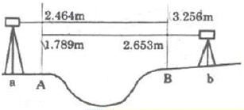
- 49.422m
- 50.250m
- 51.082m
- 51.768m
(정답률: 40%)
50. 조경식재공사 시 다음 조건을 참고하여 산출한 총공사비는?
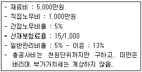
- 6,066만원
- 6,289만원
- 6,547만원
- 8,320만원
(정답률: 42%)
51. 공원 조명에 관한 설명으로 틀린 것은?
- 조명용 각종 배선은 지하매설 방식이 바람직하다.
- 공원조명은 보안성, 효율성, 쾌적성 등을 고려해서 설치한다.
- 발광색은 백색으로 연색성이 좋은 것은 고압나트륨등이다.
- 그림자 조명은 실루엣조명과 대조적인 조명방식으로 물체의 측면이나 하향으로 빛을 비춤으로써 이루어진다.
(정답률: 67%)
52. 다음 조건으로 합리식을 이용한 우수유출량은?
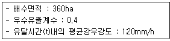
- 24m3/s
- 48m3/s
- 240m3/s
- 480m3/s
(정답률: 56%)
53. 순공사원가에 해당되지 않는 항목은?
- 안전관리비
- 간접노무비
- 일반관리비
- 외주가공비
(정답률: 60%)
54. 벽돌쌓기에서 각 켜를 쌓는데, 벽 입면으로 보아 매켜에 길이와 마구리가 번갈아 나타나는 것은?
- 프랑스식쌓기
- 미식쌓기
- 영식쌓기
- 네덜란드식쌓기
(정답률: 50%)
55. 조경 옥외시설물 중 안내시설의 시공과 관려된 설명으로 틀린 것은?
- 아크릴판은 KS규정에 적합한 일반용 메타크릴수지판으로 한다.
- 게시판의 경우 우천 시 게시물의 보호를 위하여 불투명한 합성수지의 보호덮개를 설치해야 녹슬음을 방지하고, 글씨 상태를 유지할 수 있다.
- 글씨 및 문양표기 작업이 끝난 후에는 마감표면 상태를 정리하고 각 재료의 따른 적정한 보호양생조치를 해야 한다.
- 석재바탕 글자새김의 겨우 형태와 크기는 설계도면에 의하며, 글자의 깊이는 특별히 정하지 않는 한 글자 폭에 대하여 1/2 내지 같은 치수로 하고, 글자를 새기는 순서는 글자를 쓰는 수서와 동일하게 한다.
(정답률: 62%)
56. 그림과 같은 옥벽의 경우 토압이 작용하는 곳은 옹벽 하단점으로부터 어느 지점인가?
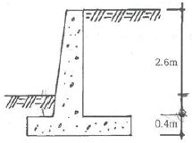
- 0.4m 지점
- 1.0m 지점
- 1.3m 지점
- 1.5m 지점
(정답률: 57%)
57. 다음은 지하수위를 낮추기 위한 심토층 배수용 암기의 설치에 대한 설명으로 옳은 것은?
- 일반적으로 주관은 150~200mm이고, 지관은 100mm인 유공관을 쓴다.
- 진흙질이 많은 곳은 관을 얕게 묻고 관의 설치 간격을 멀리한다.
- 모래질이 많은 곳은 관을 깊게 묻고 관의 설치 간격을 좁게 한다.
- 지하수위를 낮추기 위한 것이므로 관의 경사는 1%보다 작게 하고, 유속은 0.3m/sec보다 작게 한다.
(정답률: 53%)
58. 토공사용 기계로서 흙을 깎으면서 동시에 기체 내에 운반하고 깔기 작업을 겸할 수 있으며, 작업거리는 100~1500m 정도의 중장 거리용으로 쓰이는 것은?
- 트렌처
- 그레이더
- 파워쇼벨
- 스크레이퍼
(정답률: 65%)
59. 철골공사에서 크롬산아연을 안료로 하고, 알키드 수지를 전색료로 한 것으로서 알루미늄 녹막이 초벌칠에 적당한 것은?
- 광명단
- 그라파이트 도료
- 알루미늄 도료
- 징크로메이트 도료
(정답률: 49%)
60. 네트워크 관리공정에 관한 다음 설명에 적합한 용어는?
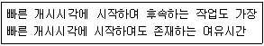
- T.F
- CP
- LST
- FF
(정답률: 52%)
4과목: 조경관리
61. 흡수율(이용률)이 가장 높으나 토양 중 유실되는 양도 많은 비료는?
- 칼륨질 비료(K2O)
- 질소질 비료(N)
- 코토질 비료(MgO)
- 인산질 비료(P2O5)
(정답률: 65%)
62. 다음의 배수시설 중에서 원형의 유지를 위하여 관리에 가장 노력을 필요로 하는 시설은?
- 잔디측구
- 돌붙임측구
- 블록쌓기측구
- 콘크리트측구
(정답률: 66%)
63. 석회황합제의 특징 설명으로 틀린 것은?
- 산성비료 등과 섞어 써야 효과가 증대된다.
- 기온이 높고 볕쬐임이 강한 때와 수세가 약한 경우에는 약해의 우려가 있다.
- 값이 저렴하고 살균력뿐만 아니라 살충력도 지니고 있다.
- 공기와 접촉하게 되면 분해가 촉진되기 때문에 저장할 때에 용기의 밀봉이 중요하다.
(정답률: 50%)
64. 관리유형에 따라 레크레이션 이용의 강도와 특성의 조절을 위한 관리기법 중 “직접적이용제한”의 방법은?
- 이용유도
- 시설개발
- 구역별 이용
- 이용자에게 정보 제공
(정답률: 54%)
65. 토양에서 pF가 의미하는 것은?
- 흡습계수
- 산화환원전위
- 토양의 보수력
- 토양 수분의 장력
(정답률: 55%)
66. 농약 저항성 해충의 가능한 저항성기작 특성에 대한 설명으로 틀린 것은?
- 살충제의 피부투과성이 증대된다.
- 체내에서 흡수된 살충제의 해독작용이 증대된다.
- 약제를 살포한 곳의 기피를 위한 식별능력이 증가된다.
- 살충제이 충제 침투를 막기 위한 피부 두께가 증가한다.
(정답률: 52%)
67. 다음 해충 방제방법 중 기계적 방제법이 아닌 것은?
- 경운법
- 차단법
- 소살법
- 방사선이용법
(정답률: 53%)
68. 구조물에 의한 비탈면 표층부의 붕괴방지를 위한 공종이 아닌 것은?
- 콘크리트 격자공
- 덧씌우기공
- 비탈면 앵커공
- 콘크리트판 설치공
(정답률: 63%)
69. 다음 중 코흐(Koch's)의 원칙과 관계 없는 것은?
- 미생물이 병든 환부에 반드시 존재해야 한다.
- 미생물은 기주생물로부터 분리되고 배지에서 순수배양이 불가능해야 한다.
- 순수배양한 미생물을 동일 기주에 접종하였을 때 동일한 병이 발생되어야 한다.
- 병든 생물체로부터 접종할 때 사용하였던 미생물과 동일한 특성의 미생물이 재분리 배양되어야 한다.
(정답률: 54%)
70. 다음 포장 및 수목(잔디)등의 설명으로 옳은 것은?
- 마른우물(dry well)은 수목이 성토로 인한 피해를 막기 위해 수목둘레를 두른 고랑이다.
- 매트(mat)는 잘라진 잔디 잎이나 말라죽은 잎이 썩지 않은 채 땅위에 쌓여 있는 상태이다.
- 대치(thatch)는 매트 밑에 썩은 잔디의 땅속 줄기와 같은 질긴 섬유질 물질이 쌓여 있는 상태이다.
- 아스팔트포장 기층의 펌핑(Pumping)은 균열부로 유수가 들어가 기충이 질컥질컥해져서 슬래브 하중에 의해 큰 공극이 생기는 것이다.
(정답률: 45%)
71. 월별 수목관리 계획 중 시기와 작업 내용이 잘못 연결된 것은?
- 4월 : 향나무의 정지 및 조정
- 7월 : 수목 하부 제초
- 8월 소나무 이식
- 10월 : 모과나무 시비
(정답률: 63%)
72. 다음 중 통기효과를 기대하기 어려운 잔디관리 작업은?
- 롤링(Rolling)
- 스파이킹(Spiking)
- 코링(Coring)
- 슬라이싱(Slicing)
(정답률: 64%)
73. 바이러스 감염에 의한 수목병의 대표적인 병징으로 옳지 않은 것은?
- 위축
- 그을음
- 기형(잎말림)
- 얼룩무늬
(정답률: 55%)
74. 조경수의 식엽성 해충에 해당되는 것은?
- 잣나무넓적잎벌레
- 솔껍질깍지벌레
- 아까시잎흑파리
- 솔알락명나방
(정답률: 52%)
75. 그네에서 뛰어 내리는 곳에 벤치가 배치되어 있어 충돌하는 사고가 발생하였다. 이것은 다음 중 어떤 사고의 종류에 해당하는가?
- 설치하자에 의한 사고
- 관리하자에 의한 사고
- 이용자 부주의에 의한 사고
- 자연재해 등에 의한 사고
(정답률: 71%)
76. 표면 배수시설인 집수구 및 맨홀의 유지관리 사항을 틀린 것은?
- 정기적인 유지보수를 실시한다.
- 집수구의 높이를 주변보다 낮게 한다.
- 원활한 배수를 위하여 뚜껑을 설치하지 않는다.
- 주변의 재 포장 시 집수구의 높이도 다시 조절한다.
(정답률: 75%)
77. 재배적 관리의 방법으로 잔디표면에 배토작업을 실시하는데, 적절하게 처리된 토양을 잔디 표면에 엷게 살포함으로써 얻을 수 있는 효과로 틀린 것은?
- 종자나 포복경의 피복을 통한 잔디생육 및 번식을 촉진한다.
- 잔디표면의 평탄화를 통해 경기와 사용하기에 좋게 한다.
- 새로운 토양미생물을 유기물에 투입시켜 대취의 분해를 억제한다.
- 겨울 동안의 낮은 온도와 건조에서 잔디를 보호할 수 있는 동해방지 효과가 있다.
(정답률: 55%)
78. 다음 조경용 기계장비의 저장 요령으로 옳지 않은 것은?
- 장기간 보관할 경우 지면 위에 나무판자 등의 틀을 깔고 놓는다.
- 사용하지 않을 경우 회전하고 움직이는 각 부분에 그리스를 주입한다.
- 엔진의 윤활과 유압부분을 위하여 1개월에 한번 씩 엔진을 가동시켜준다.
- 사용하지 않을 경우 연료를 충분히 채원서 제 성능을 발휘하게 준비한다.
(정답률: 71%)
79. 식물에 피해를 주는 대기오염물질 중 대기에서의 반응에 의하여 생성되는 광화학 산화물은?
- SO2
- H2S
- PAN
- NOX
(정답률: 52%)
80. 다음 중 지주목 설치의 장점이 아닌 것은?
- 수고(樹高) 생장에 도움을 준다.
- 수간(樹幹)의 굵기가 균일하게 생육할 수 있도록 해 준다.
- 지상부의 생육과 비교하여 근부의 생육을 적절하게 해 준다.
- 지지부위가 바람에 의하여 피해가 발생된다.
(정답률: 71%)